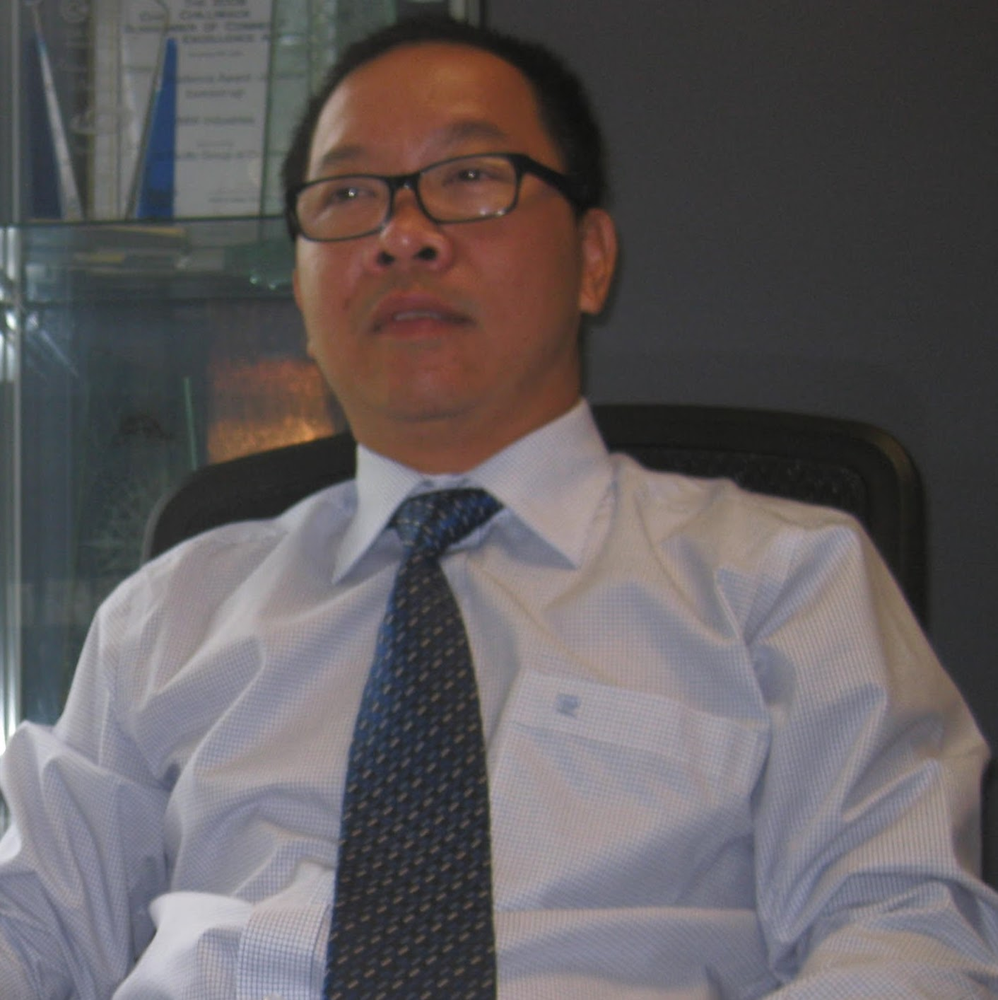
The memoir of Phạm Đức Hải - from Hanoi to Saigon, and on to Canada.
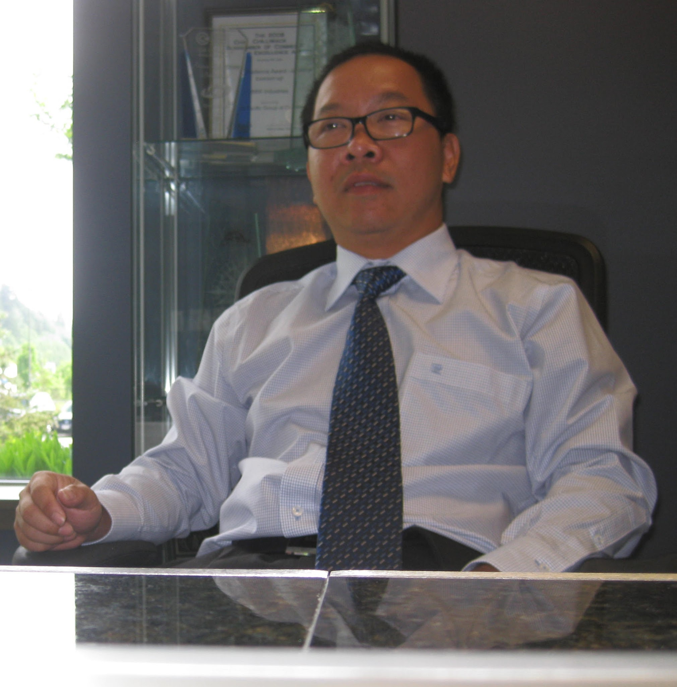
People share strange things on the internet. One morning, I posted a humorous map of the world showing how "happy" each country supposedly was - and noted, with a wink, that according to the map Vietnam was the second-happiest nation on earth. I have always liked a good joke about ourselves.
But if I were to draw an honest map of my own life, it would not be a single country. It would be a set of overlapping circles: Hà Nội, where I was born and where my roots still pull; Sài Gòn, where I built my family and my career; where I went back to school at middle age for my MBA; and a third circle, fainter but persistent, somewhere across the Pacific - Canada, the place my work and my dreams kept returning to.
This is that map, drawn from what I posted, shared, and lived between 2007 and 2026. It began as a draft from the 2014 archive; a 2026 backup of my Facebook life let me follow the road past the ocean and into the years that followed. The book is still being written.
I was born on September 2, 1974, in Hanoi - the capital of the North, a city I would leave and return to in my heart a thousand times. My hometown is Hanoi; my current city would one day become Ho Chi Minh City. But the Hanoi of my youth is the one that lives in me.
I went to Trần Phú – Hoàn Kiếm High School, class of 1990, and then to the Hanoi University of Technology, where I earned a degree in Mechanical Engineering in 1995. An engineer. My father's mother - bà nội - was a presence in our home; my son would one day travel back to visit her, just as I carried her city in me wherever I went.
The Hanoi I remember is not the one in the guidebooks. It is the Hanoi of small things. "Hồi xưa tôi hay nhảy tàu điện" - "Back in the day I used to hop on the tram." "Hồi xưa ta bé hay đi tắm mưa… đi xe đạp không bị chết máy" - "When I was little I used to bathe in the rain… riding a bicycle, no engine to stall." I remember swimming in the streets near Hồ Ha Le and Nguyễn Gia Thiều when there were few pools, the rain warm, the city gentle.
I still know the little cafe where, as a student or a young Hanoian, you could sit and watch Hoàn Kiếm Lake and drink a hot coffee on a winter night - "thật là quá tuyệt vời", truly wonderful. Someone once wrote on my wall a poem: "Hà Nội ơi! Hà Nội ơi! / Cái ngày tôi chia xa Hà Nội / Giờ ra đi mới thấy lòng tiếc nuối" - "Oh Hanoi! Oh Hanoi! / The day I parted from you / Only leaving did I feel the regret in my heart." That is exactly how it feels.
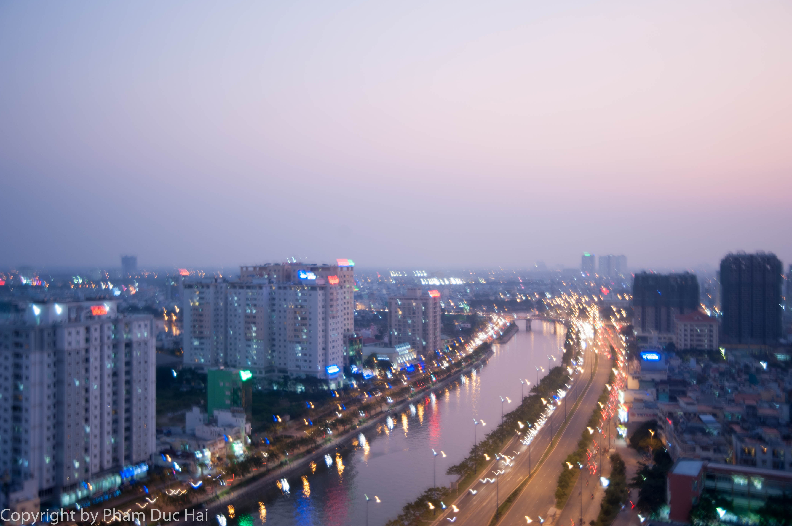
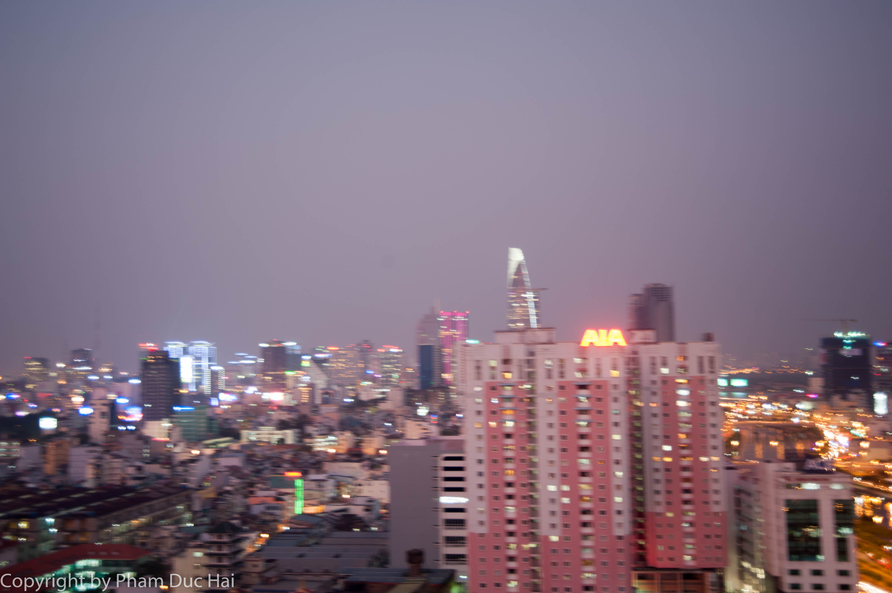
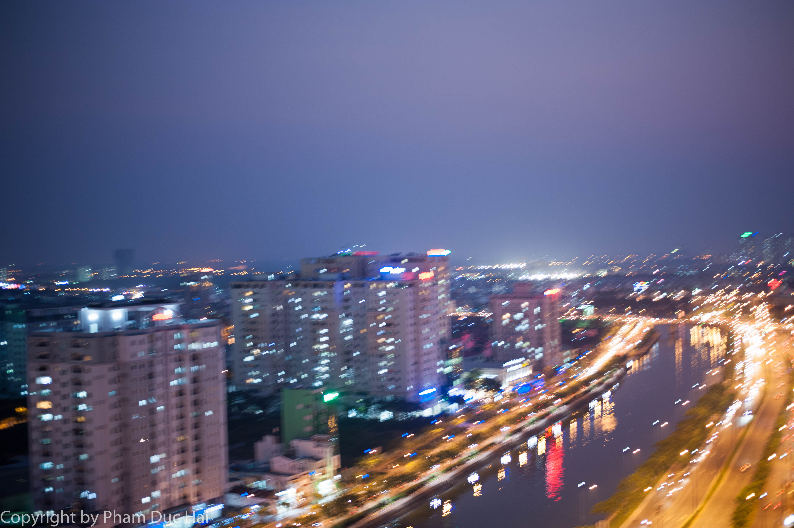
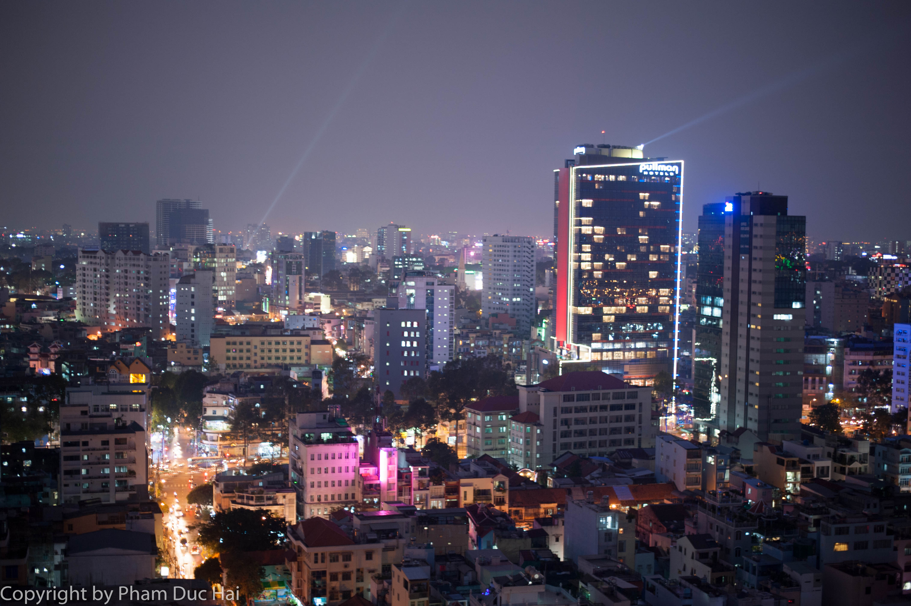
For more than a decade, my working life was one word: Hải Sơn. From May 2000 to the end of 2011, I served as Managing Director of Hải Sơn Company Ltd. I joined as an engineer and grew into a leader of the business. By January 2009 I was describing myself plainly: "is Managing Director of Hải Sơn Company Ltd." It was the longest chapter of my professional life, and the one where I learned that managing machines and managing people are different arts.
During these years I also became a father in full. My daughter - we call her Bé Na - appears in my photos from a Nha Trang trip in October 2012, traveling "với bố mẹ và Anh Tin", with her parents and her uncle Tin. My son, too, is there in the record: one February he "về thăm bà nội" - came back to visit his paternal grandmother. Family was never separate from work; it was the reason for it.
I was proud of Hải Sơn, but I also knew I wanted more than one circle on my map.
In 2011, I did something that surprised even me. I enrolled at the Maastricht School of Management in Saigon and earned an MBA. I listed it proudly that November: "added Maastricht School of Management '11 to his timeline." The graduation came two years later - an event on my calendar for August 24–25, 2013, the Maastricht MBA Graduation. An MSM MBA Graduation Ceremony that November rounded it off.
Going back to school in my late thirties, with business-management experience and in a fiercely competitive, commercial environment, taught me more than finance. It taught me that reinvention is not a young person's privilege. It also fed a hunger I already had - for books and ideas. Around this time my reading list grew serious: Why Nations Fail, Capital in the Twenty-First Century, Start-up Nation, and Bên Thắng Cuộc ("The Winning Side"), Huy Đức's contested history of modern Vietnam, which I shared and discussed openly. I was not afraid of difficult questions.
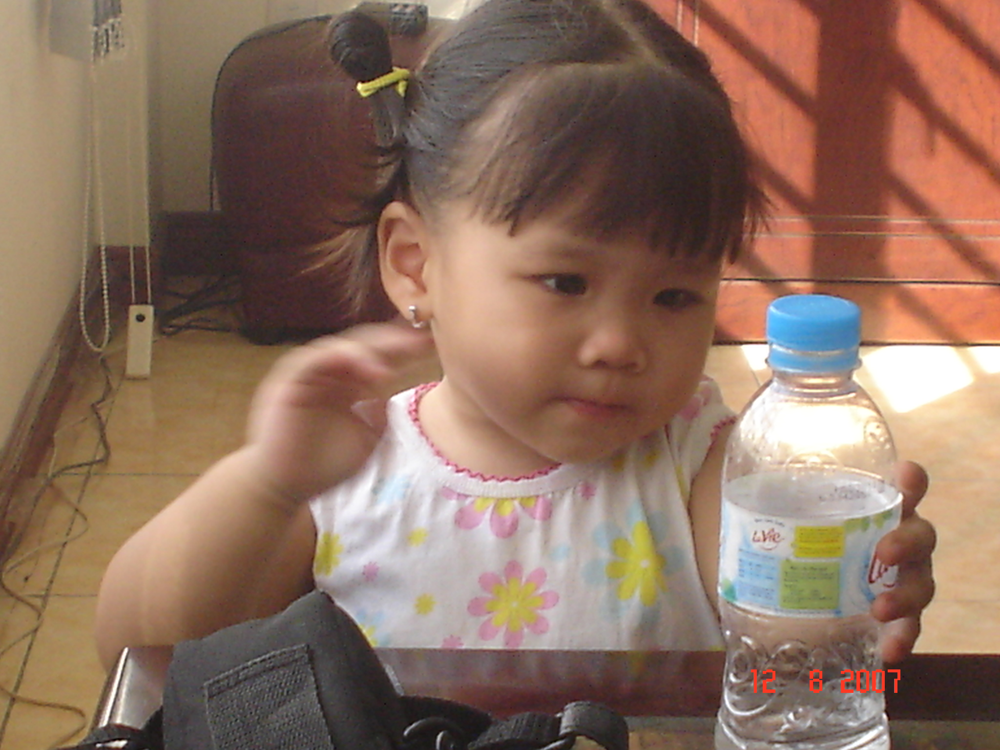
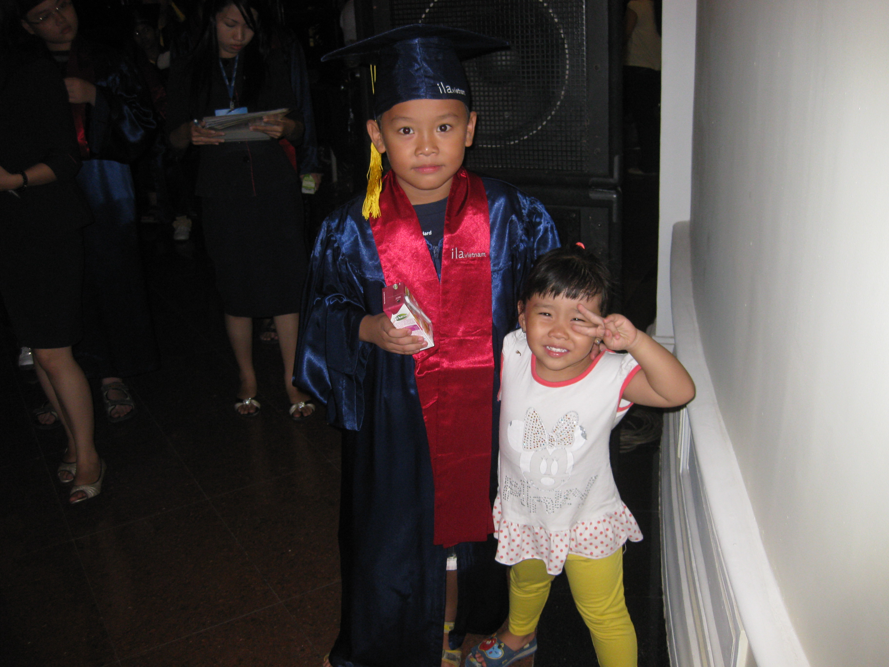
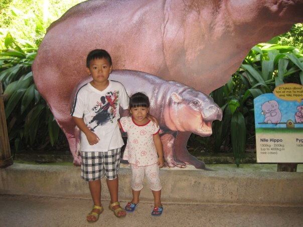
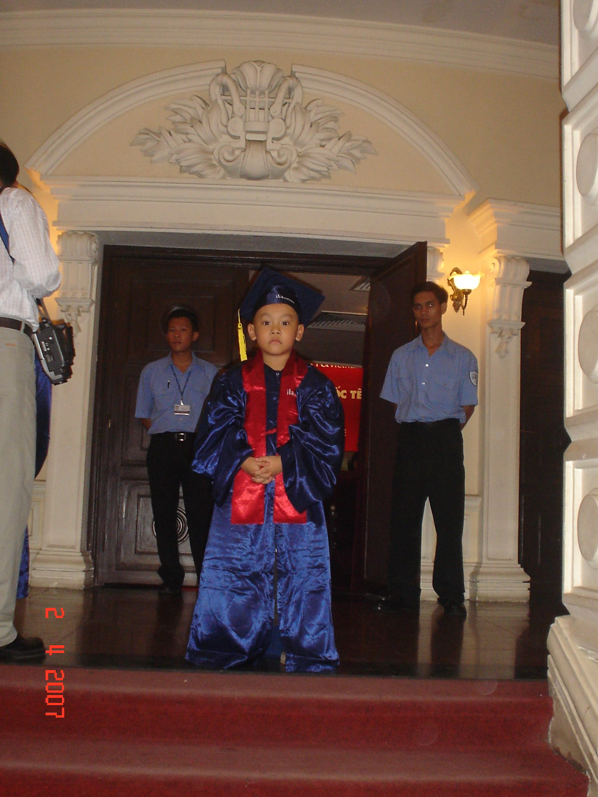
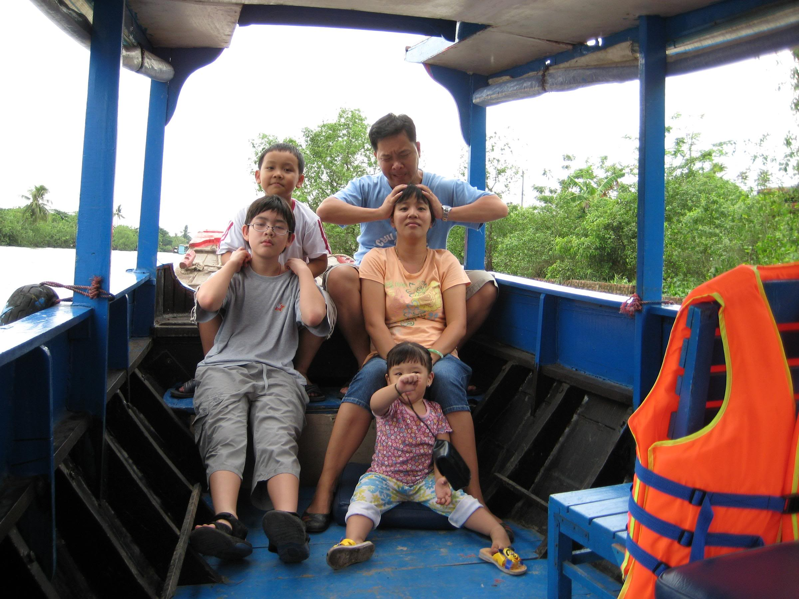
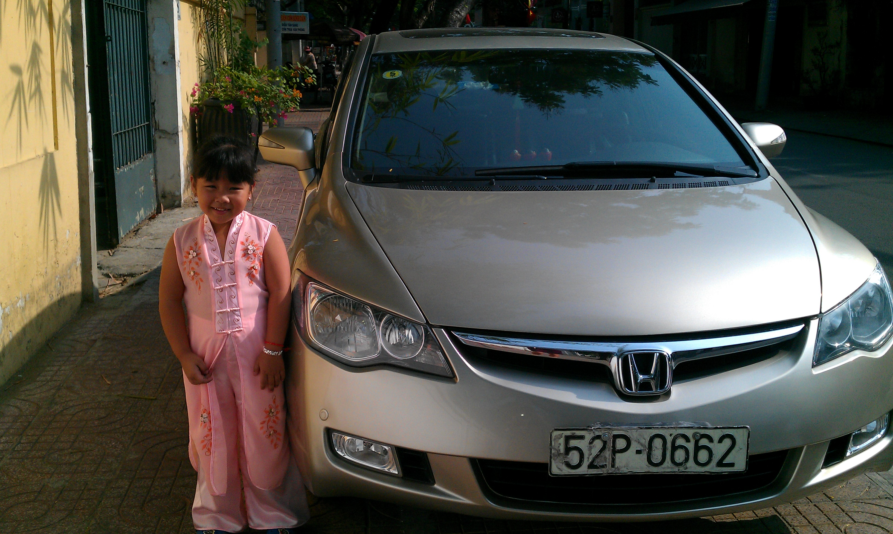
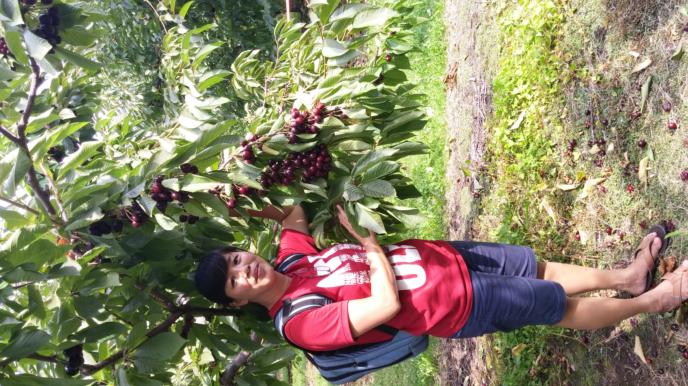
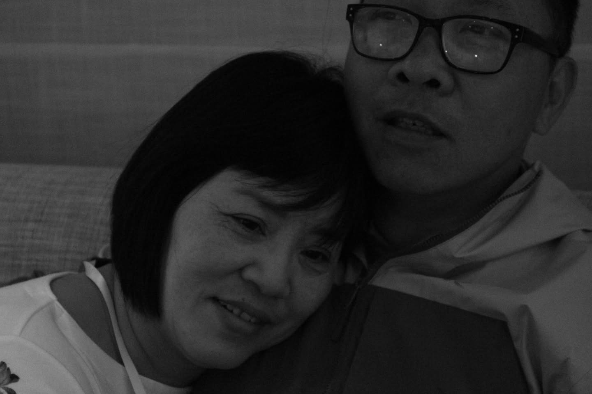
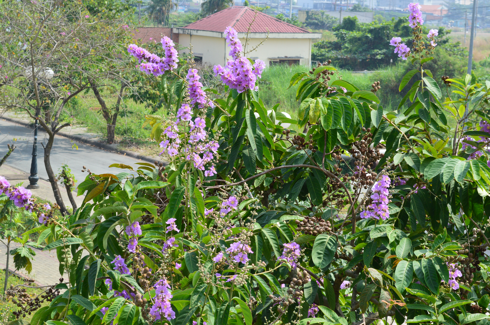
My wife is Doan Thuc Van. I married her on September 30, 1998. Our family is large and close: my older sister Lan and my younger sister Phượng, my wife's older sister Thủy, my cousin Nguyễn Anh Quân, my brother-in-law Toàn, my wife's younger sister Tú, and a sprawl of nephews and nieces - among them Hannah Pham, who wishes me happy birthday every year in both English and Vietnamese.
I still haven't forgotten Hanoi. Nearly every Tet I was "in Hanoi to celebrate Lunar New Year with family and friends." One autumn I posted, almost to myself, a line that captures the ache: "Em nghe chăng trong lắng sâu nơi hồng trái tim mình. Hà Nội mùa thu, ôi xao xuyến trong lòng ta…" - "Do you hear it, deep and quiet in the chamber of my heart? Hanoi in autumn, oh how it stirs within me…"
A man can live in Saigon and still belong to Hanoi. I learned to carry both.
If there is one line that defines me more than any job title, it is this, posted in 2011: "Hoạt động cộng đồng là cuộc đời tôi" - "Community service is my life."
Through an organization called the Hội từ thiện Vòng Tay Những Người Bạn, I threw myself into volunteer work for over three years. We sent gifts to poor patients at the Agriculture Hospital. We joined winter clothing drives ("Gió mùa đông bắc") for children in the mountains. We traveled to Gia Lai and Quảng Ngãi to bring supplies to families facing hardship after natural disasters and floods. In late December 2012, a charity I supported gifted a nhà tình nghĩa - a "house of gratitude" - to a family in Cai Lậy, Tiền Giang, and raised funds for bridges through the Vườn Nhân Ái ("Garden of Compassion") foundation.
That same season I shared a parable that says more than any resume: the story of the wealthy woman who, grieving, goes in search of "seven bowls of water" from seven families who have never known suffering - and finds, household after household, that everyone carries a private sorrow. In listening to them, she forgets her own. The lesson, as I wrote it: "Khi ta cho đi cũng là khi ta nhận lại nhiều hơn thế" - "When we give, we receive even more in return."
I believe that. I have lived it.
I have never been a man who stays still. Those years read like a travel diary:
And then there is the faintest, most intriguing circle on my map: Canada. In 2014 I began a course organized by IMW in Canada. In June 2015 my family emigrated to Canada. And my newest job pulled me toward North America directly.
In March 2014 I became Regional Sales Manager at IMW Industries, a clean-energy company - part of Clean Energy Fuels Corp (NASDAQ: CLNE), a leader in compressed natural gas (CNG) and LNG fueling for transportation. I attended IMW's "Free CNG Webinar," turbomachinery seminars, and Lean Six Sigma training. The company was based in Chilliwack; my calendar even held an equipment-training course in Chilliwack - and it was the first place I went to in Canada.
For an engineer who had spent his life around machines and fuel, this was a fitting late-career turn: building the infrastructure for cleaner air. And it tied a thread I had been pulling for years - toward Canada, toward the overseas Vietnamese world of Quang Lê's music and Celine Dion, toward the next chapter that, by the summer of 2015, my family and I had stepped into.
I will not pretend the archive tells me everything. But by June 2015 the question had answered itself: my family emigrated to Canada. The pull was real, and it was mine.
If you asked me the lessons, I would not reach for a business book first. I would reach for the things I posted because they mattered:
I also carried joy - the silly, the musical, the absurd. I posted about a wild pig in Australia that stole 18 beers, drank them all, and picked a fight with a cow. I went to see Quang Lê and Lệ Quyên in Saigon - and Richard Clayderman and Modern Talking in Vancouver. I loved Quang Lê and Khánh Ly and French songs and Celine Dion. A life with both Napoléon Hill and a drunk pig is, I think, a balanced life.
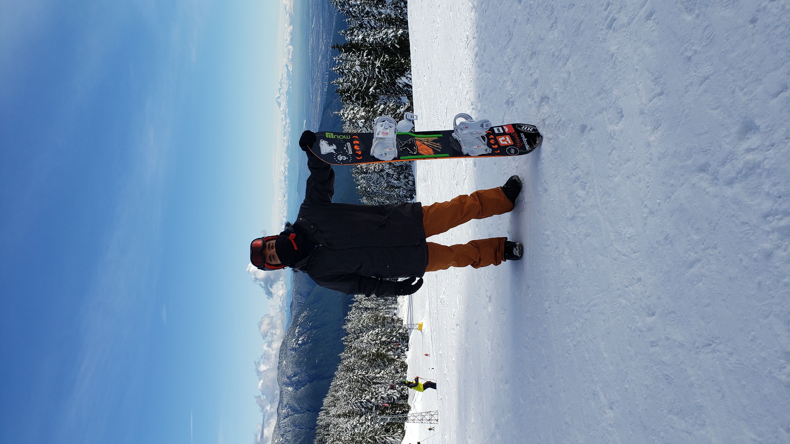
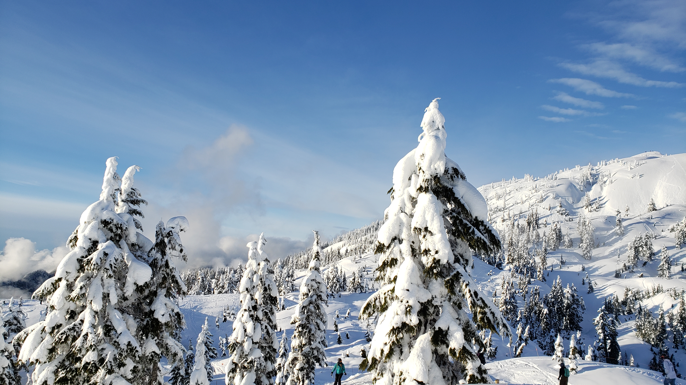
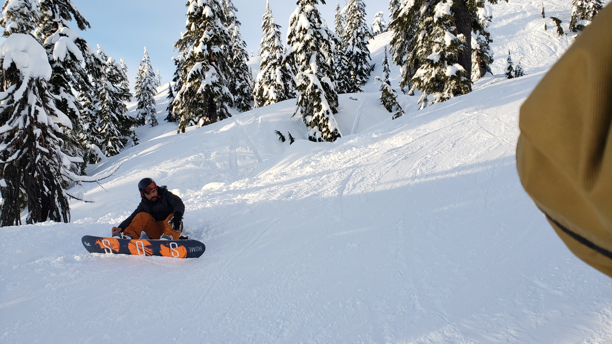
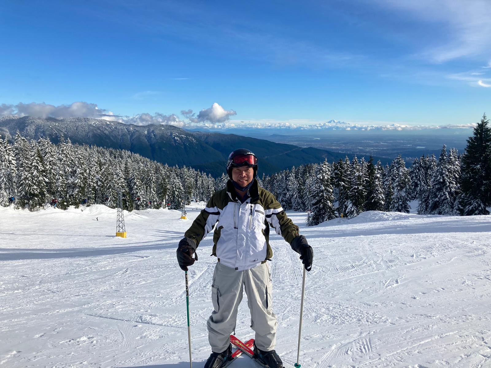
When our plane set down in Canada in June 2015, the faintest circle on my map suddenly became solid ground. Chilliwack, British Columbia - home of Clean Energy Compression, the clean-energy company I had already been working with from Vietnam - was the first place my feet touched. The snow-capped Coast Mountains rose around the Fraser Valley, and I remember thinking that the map I had drawn back in 2014 had not been a metaphor after all.
That first summer was full of firsts. We drove to Kelowna for cherries and U-pick orchards; we walked Tynehead Regional Park; we took the ferry to Nanaimo and went whale watching. I laced on skates for the first time in my life and discovered that a middle-aged man from Hanoi can, in fact, fall down gracefully - and get back up. Buntzen Lake, the Abbotsford Airshow, the seawall at Stanley Park, the gondola up Grouse Mountain: each one new, each one fun.
Then came winter. My birthday that February found me, as I wrote, at "lưng chừng núi" - halfway up the mountain of life. I had already climbed far, the peak still ahead, near yet far; my strength was tiring but my spirit was not yet old, and I would keep climbing just to see what the summit looked like. On our first white Christmas we drove up Cypress Mountain and stood in real snow as a family for the first time. I had spent forty-one winters in the tropics; now the cold was a gift.
2016 deepened the roots. We celebrated our first New Year together on Canadian soil, skied at Whistler, crossed the border to Seattle, wandered the tulip fields, and sailed the Inside Passage on an Alaska cruise. But that year also brought the hardest loss: my mother passed away on December 14, 2016. I could not sit with her in Hanoi the way I once had. Canada had given me mountains and snow; it could not give me back the mother I had left behind. I carry her the way I carry Hanoi.
Two years after landing, I did the most improbable thing a 43-year-old immigrant can do: I went back to school. In September 2017 I enrolled at BCIT - the British Columbia Institute of Technology - in Industrial Instrumentation and Process Control Technology. My wife and I walked into BCIT hand in hand on the first day of the school year, and I joked in a post that it was "Ngày đầu tiên đi học, vợ dắt tay đến trường" - "first day of school, my wife leading me by the hand" - playful, but deeply tender, just like the days she accompanied me to my MBA classes.
Going back to study, I wrote, felt "like watching a new Spider-Man movie from Universal" - the theory I already knew, like an old comic book, but the practice dazzled me with new special effects. BCIT put real money into its labs: instruments, simulators, real processes to touch. I climbed and camped and crabbed with classmates; I toured the Stave Falls Dam and felt the old engineer in me stir. I even earned an amateur radio callsign, VA7HAJ, and joined the Surrey amateur radio community, a way of saying "I am here" in a brand-new language.
In April 2019 I said goodbye to the school that had been a daily companion for two years: "Tạm biệt mái trường đã cùng tôi ngày ngày suốt 2 năm!" That same year brought two milestones at once. In August 2019, at a Canadian Immigration and Citizenship office, I wrote simply: "We made it, wow." I was officially a Canadian citizen. That autumn I took part in my first Canadian federal election - "Đến ngày bầu cử Canada" - and, like many newcomers, cast my first ballot in a multi-party democracy, a strange and wonderful feeling.
The engineer in me could not help but compare. In "Lỡ tàu" - "Missing the Train" - I wrote about my class at Hanoi University of Technology, K35 Chế Tạo Máy: of perhaps twenty or thirty classmates, only two or three ever worked in the very field we trained for. Canada, by contrast, had spent roughly ten times my tuition in public money and then put that training straight to use in industry that exported back to the world. I did not write it to boast. I wrote it as a letter to the country I left - may Vietnam catch the next train. My own work now carried me north to projects like the Site C dam, to Timmins and Little Long, to Canmore, Calgary, and Banff in Alberta, where the engineering I learned in Hanoi finally met the engineering I learned at BCIT.
If Canada anchored me, the wider world kept calling. We roamed widely. There were cruises - the Caribbean in 2017, Hawaii and Pearl Harbor in 2019, where I stood where history had turned; Cancún in 2023; and, in 2024, Greece, where a taxi-guide named Stavros became a friend and showed me Athens and Olympia with the pride of a man who knows his ruins better than his own pockets. In 2025 we traced the Nile from Cairo to the temples of the pharaohs - a longer journey back in time than any I had taken. In 2026 we walked the tiled streets of Porto and the storybook palaces of Sintra in Portugal.
But the trip that mattered most was the one we took alone. In September 2023, my wife and I celebrated our 25th wedding anniversary - "Celebrate 25 years anniversary with my sweetheart <3" - at the Basilique Notre-Dame de Montréal and through Quebec. Twenty-five years earlier, in 1998, I had married Đoàn Thục Vân. We had built a family and a career in Saigon, crossed an ocean, and here we were - older, and luckier - inside a cathedral older than either of our countries. I have thanked her in public posts more than once: on Thanksgiving, on her birthday, because a man who crossed two continents with his wife always standing beside him should say it from the bottom of his heart.
The pandemic found us in Surrey. In early 2021 my whole family caught Covid. I wrote "Covid tự sự" - "A Covid Confession" - not as a victim but as a witness: how the disease first attacks the lungs and the circulation, how a body kept fit by tennis and swimming recovers faster, how a mind prepared in advance stays calm. I treated it like a tough opponent across the net - you cannot avoid the match, so you train, and you play it out.
Tennis became more than exercise; it became a philosophy I built a website around. In 2026 I launched a Facebook page, tennisknowledgebase - "Một trang web chuyên về tennis của PĐH" - a small encyclopedia of the game I love. Around the same time I turned to Thái Cực Quyền - Tai Chi - "Hành trình tìm về cội nguồn, dùng Thái Cực Quyền giúp cơ thể chữa lành" - a journey back to my roots, using Tai Chi to let the body heal and to steady the mind. At 52, I gathered what I had learned into a little document I shared with friends: "Tuổi 52 không phải là hoàng hôn. Đó là lúc bầu trời chuyển từ màu xanh nhạt của buổi sáng sang màu vàng rực rỡ của buổi chiều" - "Fifty-two is not dusk. It is the sky turning from the pale blue of morning to the blazing gold of afternoon."
I have also kept writing the longer essays - on parenting in the modern world, on why a city like Surrey should let its people choose their own police, on the Vietnamese temples rising in a Canadian suburb and the community that built them. Some I posted in Vietnamese, some in English, all of it in the same voice that once posted a drunk pig in Australia and a world-happiness map. The circles on my map are no longer separate. Hanoi, Saigon, and Canada overlap now, like rings on water, and I sit at the center where they meet.
The earliest entries in this archive were from December 2014. But the story did not pause there. Driven by a 2026 backup of my Facebook life covering 2007 through 2026, this memoir now follows the road past the ocean - through the first Canadian winters, a second education at BCIT, the long process of becoming a citizen, the travels, the anniversaries, and the quiet work of staying balanced in a new country.
I am, at the close of this fuller draft: a Hanoi boy, a Saigon father, a Canada-trained engineer, a clean-energy and industrial salesman, a charity participant, a tennis enthusiast in Canada, a reader of difficult books, and a man who still believes that kindness is the only real technology.
The road goes on.